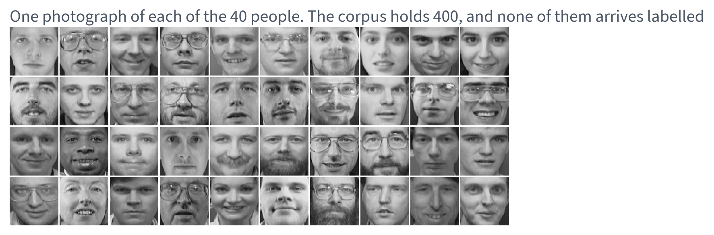
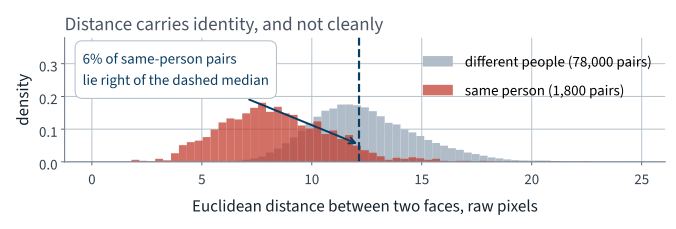
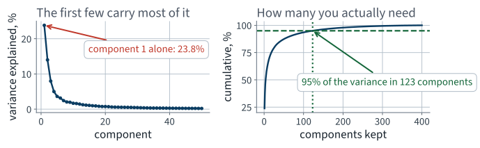
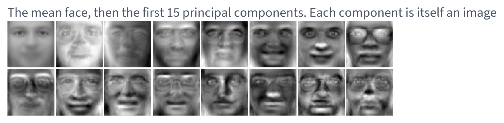
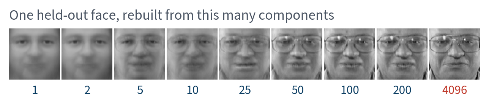
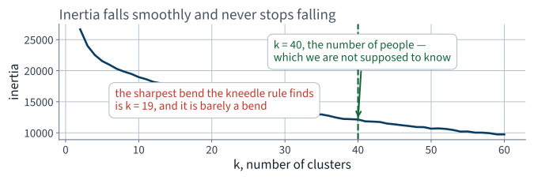
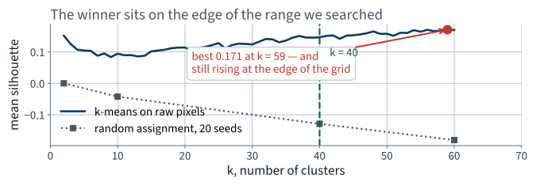
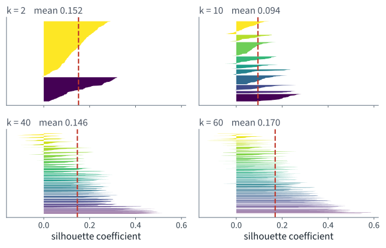
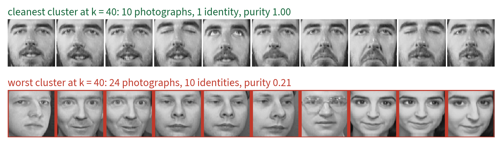

Olivetti faces · four hundred photographs, no labels
Lecture 8 Géron Ch. 7 & 8
Applications of Machine Learning
BSc Mathematics of Artificial Intelligence · Third year
Seven lectures, and every one of them was handed the answers:
| Lecture | What the data came with |
|---|---|
| 1–2 · California housing | a price for every district |
| 3 · MNIST | a digit for every image |
| 4–5 · Titanic | a survivor flag for every passenger |
| 6–7 · CoverType | a cover type for every plot |
| 8 · Olivetti faces | nothing |
Last lecture averaged many trees: the variance of an average of correlated predictors falls to $\rho\sigma^2$ and no lower, which is why bagging, random forests and extra-trees all work at lowering the correlation between their members — and boosting, built sequentially, attacks the bias instead. Every one of those models was scored against a label.
Today there is no target column. That changes what a metric can be, what a baseline is, and how you find out you were wrong.
Chapters 7 and 8 together, because the second one does not work on this data until the first one has been applied to it.
This is the ordinary situation outside a benchmark: data is cheap, labels are not.
Supervised
Unsupervised
| Quantity | Value |
|---|---|
| Photographs | 400 |
| Distinct people | 40 |
| Photographs per person | 10 |
| Pixels per photograph | 4,096 |
| The whole corpus in memory | 6.6 MB |
Flatten the 64 × 64 grid and a photograph is a vector. Every method today measures a distance between two of them.
Ten times more dimensions than points. Four hundred points cannot fill four thousand dimensions, and the first block of this lecture is about what follows from that.
Measured on one run of this lecture’s notebook; hardware, library versions and random seeds can make a re-run differ slightly.

Same crop, same lighting rig, same background. What varies between rows is the person — and, as much, the lamp.
y exists. The brief does not have itOlivetti is a benchmark, so it ships with the identity of every photograph. The archive we are pretending to hold does not.
y is used in exactly two ways, both announced on the slide
where they happen: as the forty labels we paid for, and as an
audit, to find out what those forty could not have told us.
Any other use of y is the same error as scoring
on the test set, wearing different clothes. Slides marked audit are
results the project itself could not have computed.
k-means groups points that are close in Euclidean distance. So one measurement decides whether the rest of the lecture can work (an audit — it uses the hidden labels):
Are two photographs of the same person closer than two photographs of different people?
| Euclidean distance, raw pixels | Pairs | Mean | Median |
|---|---|---|---|
| Same person | 1,800 | 8.38 | 8.15 |
| Different people | 78,000 | 12.41 | 12.15 |
Measured on one run of this lecture’s notebook; hardware, library versions and random seeds can make a re-run differ slightly.

6% of same-person pairs sit further apart than the median different-person pair. Pixel distance is partly identity and partly lighting.
One model-selection sweep — k-means at every $k$ from 2 to 60, ten restarts each, scored by silhouette:
| Step | Seconds | Cost model |
|---|---|---|
| 590 runs of Lloyd’s algorithm | 77 | $O(\text{iterations} \times m\,k\,n)$ |
| 59 silhouette scores | 2 | $O(m^{2}n)$ |
| One sweep, total | 78 | two threads, one machine |
Both cost models are linear in $n$, the number of features. Two of the three factors are properties of the problem. The third is a property of the representation.
So: how many of those 4,096 numbers are doing work — and what exactly do you lose by throwing the rest away?
Measured on one run of this lecture’s notebook; hardware, library versions and random seeds can make a re-run differ slightly.
Among all $d$-dimensional subspaces, which one loses the least when you project the data onto it — and how much does it lose?
Measured on one run of this lecture’s notebook; hardware, library versions and random seeds can make a re-run differ slightly.
$\bar{\mathbf{x}}$ holds the column means, the mean face. Without centring, the direction of largest $\sum_i \lVert\mathbf{w}^{\intercal}\mathbf{x}^{(i)}\rVert^2$ is essentially $\bar{\mathbf{x}}$ itself, and the first component describes nothing but “this is a photograph of a face”.
PCA centres for you. If you write the SVD
by hand it does not, and the result is a plausible-looking first component
and no error message. It is the commonest silent bug in a hand-rolled PCA.
examinable Reproduce this from the statement of the problem.

The explained variance ratio $r_j = \sigma_j^2 / \sum_i \sigma_i^2$ is line 7 normalised: keeping $d$ components removes exactly $\sum_{j\le d} r_j$ of the squared error. 123 components hold 95% of the variance of 4,096 pixels — a factor of 33 fewer numbers per photograph.
Measured on one run of this lecture’s notebook; hardware, library versions and random seeds can make a re-run differ slightly.
from sklearn.decomposition import PCA
Z = PCA(n_components=0.95, random_state=42).fit_transform(X)
print(Z.shape) # (400, 123)
n_components=0.95 — a float between 0 and
1 is read as a variance target rather than a component count,
and scikit-learn chooses $d$ for you from the cumulative ratio. Here it
chooses 123.
An integer means “this many components”; a
float means “this much variance”. One character apart, and
n_components=1 and n_components=1.0 do completely
different things.
Measured on one run of this lecture’s notebook; hardware, library versions and random seeds can make a re-run differ slightly.

A component is a vector in $\mathbb{R}^{4096}$, so it is an image — an eigenface. Look at the first few. They are lighting — which is exactly what the distance histogram predicted would dominate.
Measured on one run of this lecture’s notebook; hardware, library versions and random seeds can make a re-run differ slightly.

Recognisable well before 123 components. Identity survives a compression that the pixel values do not — and each PCA here was fitted on the training faces only.
Measured on one run of this lecture’s notebook; hardware, library versions and random seeds can make a re-run differ slightly.
A reducer is an estimator: it is fitted. Fit it before the split and the held-out faces have helped choose the subspace they are then judged in.
pca = PCA(n_components=0.95).fit(X) # all 400 photographs
Z = pca.transform(X)
Z_tr, Z_te, y_tr, y_te = train_test_split( # the split comes after
Z, y, test_size=0.3, stratify=y, random_state=42)
The 280 training faces, once centred, span at most a 279-dimensional subspace of $\mathbb{R}^{4096}$, so adding 120 more points genuinely changes which directions survive. This is not a rounding error.
Measured on one run of this lecture’s notebook; hardware, library versions and random seeds can make a re-run differ slightly.
| $d = 123$, 20 stratified splits | Fitted on train | Fitted on everything | Leaky wins |
|---|---|---|---|
| Reconstruction error, held out | 0.00243 | 0.00096 | 20 of 20 |
| Accuracy, held out (logistic regression on the components) | 97.4% | 97.4% | 3 of 20 |
The leak makes the reconstruction error look 61% better and moves the accuracy by nothing measurable.
Pipeline([("pca", PCA(0.95)), ("clf", …)]), which refits
the PCA inside every fold and makes the leak structurally impossible rather
than merely avoided.
Measured on one run of this lecture’s notebook; hardware, library versions and random seeds can make a re-run differ slightly.
n_init times and keep the bestn_init
changed its default between scikit-learn versions, so name it.
Convexity. The partition is a Voronoi diagram of the centroids, so every cluster is convex.
Spherical, equal-sized. The only quantity is distance to a centre.
Total assignment. Every point belongs to exactly one cluster; there is no “none of these”.
$k$ is given. Nothing in the algorithm chooses it.
The first three are dropped by DBSCAN and by Gaussian mixtures, in the last block of this lecture. The fourth — choosing $k$ — is what the rest of this section is about.
The sum of squared distances to the assigned centroid — what k-means minimises
So “minimise inertia” selects one cluster per photograph. The elbow rule exists to work around that.

A smooth convex curve. The kneedle rule — furthest below the chord, both axes rescaled — picks $k = 19$; the archive has 40, and 46% of the inertia at $k=2$ is still present at $k=40$.
The elbow is not a criterion. It is a picture of a criterion that does not exist, and no better heuristic repairs it, because the information is not in $J$. So use one that does.
For a point $i$, let $a$ be its mean distance to the other points of its own cluster, and $b$ its mean distance to the points of the nearest other cluster.
Compare two groupings pair by pair, and count the pairs they agree about — together in both, or apart in both:
$\mathrm{RI}$ is high for free at large $k$ — almost every pair is apart in both groupings. The adjusted index subtracts what chance would give, so random scores 0 in expectation at any $k$, perfect scores 1, and negative is worse than chance.
We can compute it on the forty labelled photographs only: 780 pairs, of which just 22 are the same person. Treat it as a sanity check with a wide interval, never as a ranking.
Put every photograph in a uniformly random group, twenty times, and look at the spread. Both metrics have no natural scale, and a number with no null has no units.
| Random assignment | Silhouette | ARI on the forty |
|---|---|---|
| $k = 10$ | −0.0422 ± 0.0045 | −0.0040 ± 0.0205 |
| $k = 40$ | −0.1288 ± 0.0107 | −0.0089 ± 0.0244 |
| $k = 60$ | −0.1805 ± 0.0124 | −0.0075 ± 0.0261 |
Both anchors sit at zero, and now you know the width of the noise around zero. A silhouette of 0.02 is not a discovery.
Measured on one run of this lecture’s notebook; hardware, library versions and random seeds can make a re-run differ slightly.

A maximum exists. It is also low, and the curve near it is nearly flat — so the chosen $k$ is not decisively better than its neighbours.

One knife per cluster: width is size, length is quality. At larger $k$ they are short and uneven.

The cleanest and the worst cluster at $k=40$. The bottom row is not a person. It is a lighting condition — several different people lit and posed the same way.
| At $k = 40$, against the hidden identities | Value |
|---|---|
| Cleanest cluster: 10 photographs, purity | 1.00 |
| Worst cluster: 24 photographs of 10 people, purity | 0.21 |
| Mean purity across the forty clusters | 0.74 |
| Clusters holding exactly one person | 16 |
| Clusters with exactly ten members | 7 |
| Cluster sizes, smallest to largest | 4 to 25 |
Every true group has exactly ten members. The overlap the distance histogram showed before anything was fitted — pixel distance is partly identity and partly lighting — is now a count.
Measured on one run of this lecture’s notebook; hardware, library versions and random seeds can make a re-run differ slightly.
Z = PCA(n_components=0.95, random_state=42).fit_transform(X) # 123
for k in range(2, 61):
km = KMeans(n_clusters=k, n_init=10, random_state=42).fit(Z)
sil.append(silhouette_score(Z, km.labels_))
The clustering code is unchanged. The grid is unchanged, the
seed is unchanged, n_init is unchanged. Only what k-means is
looking at changed.
One line, and both cost models lose a factor of 33 in their $n$.
min_samples points lie within eps of iteps of each other are in the same
cluster; so are the non-core points in their neighbourhoods
db = DBSCAN(eps=6.0, min_samples=3).fit(Z)
n_clusters = len(set(db.labels_) - {-1}) # exclude the noise label
DBSCAN has no predict. It is
transductive: to label a new point you fit again, or you train a classifier on
its output.
Model the data as coming from $k$ Gaussians with unknown means, covariances and weights, fitted by expectation–maximisation:
predict_proba returns a
distribution over componentsBy density
A Gaussian mixture is a density. Score every image and call the lowest few anomalous.
d = gmm.score_samples(Z)
bad = d < np.percentile(d, 3)
By reconstruction error
An image the eigenfaces cannot rebuild is unlike the images that built them.
R = pca.inverse_transform(pca.transform(Xa))
err = ((R - Xa) ** 2).mean(axis=1)
Test both by planting twelve corrupted images — four rotated, four dimmed, four double-exposed — and counting how many each puts in its top twelve. The notebook does exactly that, with both detectors fitted on the clean corpus only.
Split the corpus 280 / 120, stratified by identity. We may label forty of the 280 training photographs. Where we spend them turns out to matter more than what we do with them.
km.transform(Z).argmin(axis=0)Same classifier, same held-out faces, twenty splits. The only thing that varies is which forty were labelled.
| Labels used | Held-out accuracy | sd over 20 splits |
|---|---|---|
| 40 at random | 48.1% | 3.8% |
| 40, one per cluster | 60.5% | 4.8% |
| Propagated to the whole cluster | 55.6% | 4.8% |
| Propagated to the closest 75% | 55.1% | 4.9% |
| All 280 true labels | 97.4% | 1.6% |
Twenty splits, because the differences between the middle three rows are of the same order as their spread — and a comparison that turns on less than the spread is not a comparison.
Propagation buys 280 labels from 40 and does worse than the 40 alone, because a wrong propagated label is worse than no label. Report that, do not bury it.
Measured on one run of this lecture’s notebook; hardware, library versions and random seeds can make a re-run differ slightly.
Lighting dominates the distance. Two one-line repairs, on the same 400 faces, choosing $k$ by silhouette and reporting ARI exactly as before:
| Representation | Best $k$ | Silhouette | ARI, all 400 (audit) |
|---|---|---|---|
| PCA to 123 dimensions | 60 | 0.205 | 0.524 |
| PCA 123, first 3 components discarded | 60 | 0.184 | 0.508 |
| Unit-norm each image, then PCA 123 | 58 | 0.189 | 0.464 |
Neither helps. The leading components carry pose and face shape as well as illumination, so removing them throws away signal with the nuisance. The remedy that does work is a representation learned for the task rather than for variance — which is what Part VI builds, and why a pretrained encoder beats a hand-chosen projection.
Note also what chose $k$. Sweeping $k$ and keeping the best ARI makes both repairs look like gains — because ARI is computed from the labels this whole lecture is pretending not to have.
Measured on one run of this lecture’s notebook; hardware, library versions and random seeds can make a re-run differ slightly.
n_components=0.95 to 0.99, which takes $d$
from 123 to 260. The sweep slows by roughly the ratio of the two, and the
ARI barely moves — which is the whole trade-off in one edit.
Measured on one run of this lecture’s notebook; hardware, library versions and random seeds can make a re-run differ slightly.
Measured on one run of this lecture’s notebook; hardware, library versions and random seeds can make a re-run differ slightly.
Not presented — for afterwards
five, in the style of the written paper
Solutions on Lecture 9’s deck.
Solutions on Lecture 9’s deck.
Measured on one run of this lecture’s notebook; hardware, library versions and random seeds can make a re-run differ slightly.
The five set at the end of Lecture 7
not part of this lecture
1. For $n$ predictors each of variance $\sigma^2$ and pairwise correlation $\rho$, the variance of their average…
It tends to $\rho\sigma^2$ — correlation, not ensemble size, sets the floor.
2. Bagging measures $\rho = 0.072$ with one member at 78.8% accuracy; the random forest measures $\rho = 0.043$…
Lowering $\rho$ is not free. The forest lowers it by letting each split see only 7 of 54 columns, which handicaps every member, and the formula is about variance alone: $\sigma^2$ sits in both terms and bias is not in it at all.
3. You set bootstrap=False and oob_score=True. State what happens and why.
It raises: with no bootstrap there are no out-of-bag rows.
4. Impurity importance ranks a column of random numbers tenth of 55; permutation importance on held-out data…
Shuffle one column of the held-out set, re-score the fitted model, and report the fall in accuracy, repeated for a spread. A random column carries no information the model can use on new rows, so shuffling it costs nothing.
5. A forest improves accuracy over one tree by far less than the variance reduction would suggest. Is this a…
No — variance is only one term of the error.
Lecture 9 · Géron Ch. 9
Back to labels: ten classes of small greyscale images, and a pixel as a feature
The multilayer perceptron, and why a stack of linear layers is a linear model
A layer in matrices, softmax and cross-entropy, and the parameter count before the fit
A network fitted and tuned by hand — and the four walls fit() puts round you
Run the Lecture 8 notebook first